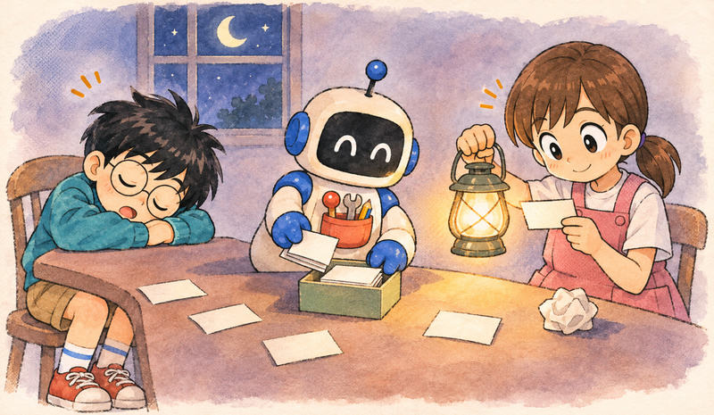
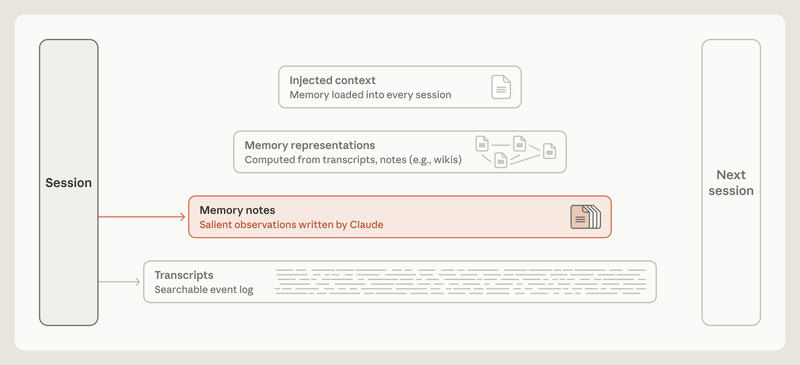

Feature 08 · ARTICLE · 2026 11
The components of agent memory
Life can only be understood backward, but it must be lived forward, and agent memory faces the same bind. Claude writes notes during a session, betting on what a future session will need. We’ve found that frontier Claude models judge that well and do best when told what memory is for, not how to use it. Notes can still be wrong or go stale. Dreaming, an offline pass over transcripts, lets Claude correct them, build representations such as wikis, and keep the layer loaded into every session small. The gains depend on the task: wikis helped most when answers spanned several documents and showed no clear gain when one document held them.


Memory as prediction

By agent memory we mean knowledge Claude gains from experience and keeps between sessions as context it can read later. It excludes changes to weights, in-context learning, and compaction. Writing down a rule predicts that the pattern will matter again.
On a database task from CL-Bench 1.0, Claude answered each question in a fresh session, learned the correct answer, and could write to a memory directory that persisted. Sonnet 4.6 got as far as untested theories. Opus 4.7 consolidated its notes and marked which facts it had checked. Sonnet 5 marked graded answers confirmed and wrote corrections. Opus 5 was the first to close the loop: rules, how it knew them, and warnings about traps. Memory took Opus 5 from 0.564 to 0.828 and Sonnet 4.6 from 0.330 to 0.364. Opus 5.5 and Sonnet 5.5 also closed the loop, scoring about the same as Opus 5 with memory and slightly higher without it.
Judging salience

About 10,000 steps into Pokémon Red, Sonnet 3.7 had written 413 memory files across 225 folders and earned one badge. Fable 5 had written nine files in two folders, plus a global.md, and earned four. The game state changes constantly, so Sonnet 3.7’s record kept going out of date. At one point it spent 17 steps creating six files and deleting nine, taking no action in the game. Fable 5 stored only what the screen didn’t show: goals, plans, and tested rules. Opus 5.5 kept a small folder, rewrote it as it played, and beat the game.
Steering
On CL-Bench we only told Claude a memory folder existed. Adding the rule “record only failures” cut the gain from memory by 0.234 for Opus 5 and 0.150 for Opus 4.7. Steering helped older models most: prompting Sonnet 4.6 to read its memory and test its theories nearly doubled its score, to 0.641. Sonnet 5 read its memory before answering 9 times out of 10 without prompting; Sonnet 4.6 did so less than half the time.
Dreaming corrects mistakes
Near the entrance to Mt. Moon, a one-way ledge drops the player back onto the earlier route. Claude wrote, wrongly, that the PokéCenter was on the east side, noted “Mt Moon DONE,” walked off the ledge, and concluded it had overshot west. Dreaming checked the note against the transcript and rewrote it. With the corrected note, Claude went back into the cave and reached Cerulean City at action 1,935. With the uncorrected note, it fell off the ledge three times, retreated to Pewter City, and never reached Cerulean. Neither did the run with no memory.
Dreaming builds wikis
On about 350,000 internal Stainless documents (roughly 420M tokens), Opus 5 agents built a wiki over 128 sessions. On 25 questions, the wiki alone rose from 13% to 48% of graded criteria. Wiki plus search rose from 54% to 61%, against 53% for search alone, and saved about 20,000 tokens per question.
On merger questions that needed several documents, Claude scored 87% with the wiki and 73% with search alone. On a LAB task where most criteria sat in one document, the wiki showed no clear gain. On another, the wiki grew to 1.77 times the corpus: a map as large as the empire, abstracting nothing.
Dreaming promotes notes
Dreaming can lift notes to the top layer, which the harness loads into every session. That layer costs tokens, carries any error everywhere, and longer instruction files reduce adherence. So it has to stay small, with details moved down and links left behind. Claude Code’s auto memory loads only the first 200 lines or 25 KB of MEMORY.md, an index of what Claude knows and where to find it.
Dreaming follows a goal
In a LAB acquisition task, agents wrote to one shared table of contract terms and overwrote one another; the brief contained 41 of 57 graded facts. A loop in which Claude reflected on its failures rewrote the instructions: one page per contract, one agent each, terms quoted word for word. Then all 57 survived.
Dreaming fills gaps
A second pass over one LAB wiki found nine links to a missing page, repointed them to an existing one, and added three pages, including an index.
Open questions
Writing notes in the moment draws attention from the task; dreaming moves the work to the background but delays access. Keeping every memory current costs compute, so it may be better to focus dreaming on what’s likely to change or tune its cadence. Transcript search could serve as the foundation, with representations on top, but those representations must be maintained against errors and hallucinations. No model can know what future turns hold. Dreaming gives Claude a chance to look backward, and we still have a lot to learn.